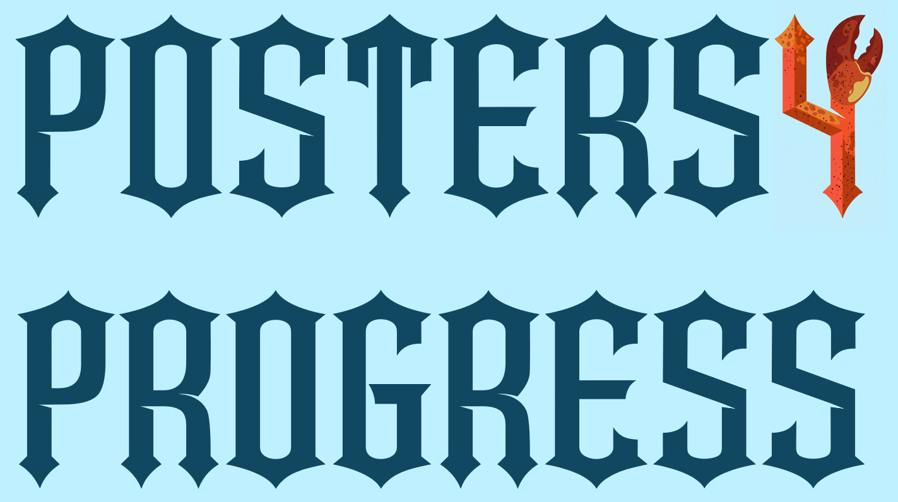
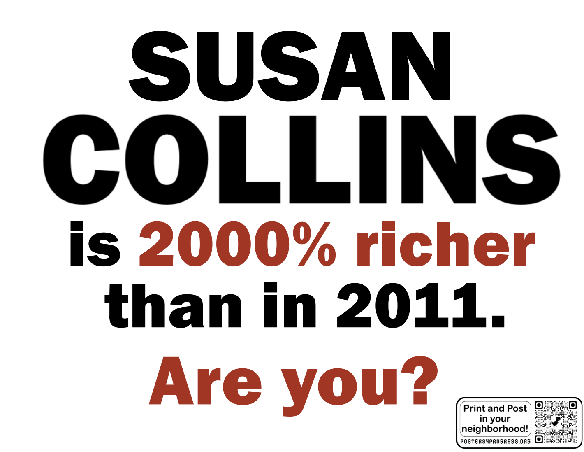
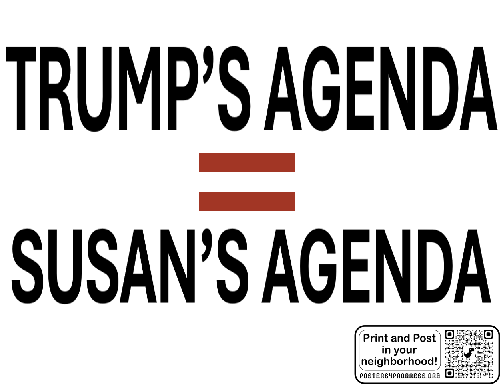
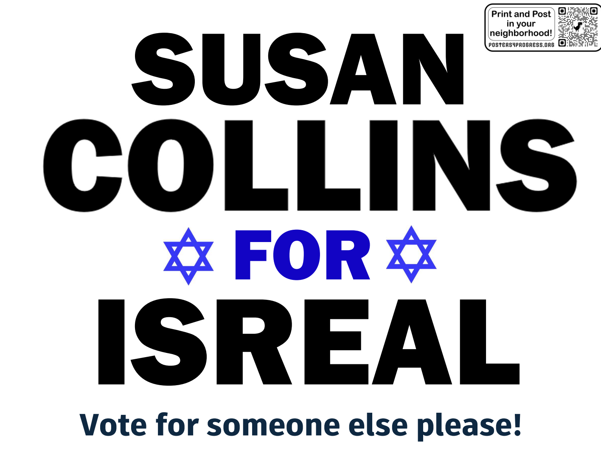
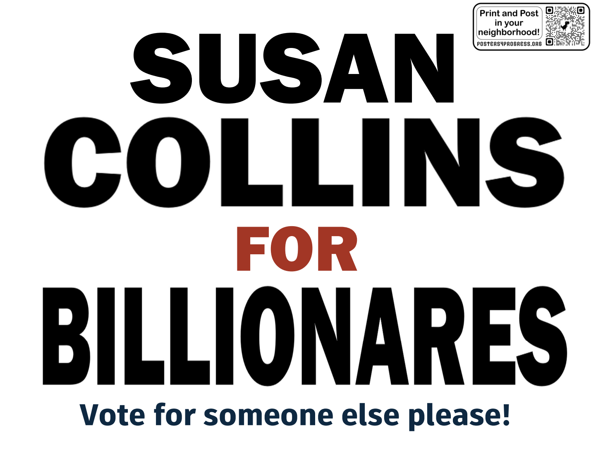

The what and the why: I have found posters in-real-life to get engagement and follow up. They communicate that your neighbor cares enough about something to hang up a poster about it. Our something is getting progressives out to vote, and spreading pointed information about Susan Collins and Troy Jackson which allow our neighbors to make an thoughtful choice! These designs are just a start. New, more artful, options by more local artists will be added soon. Submit any ideas to Posters4Progress@Yahoo.com



